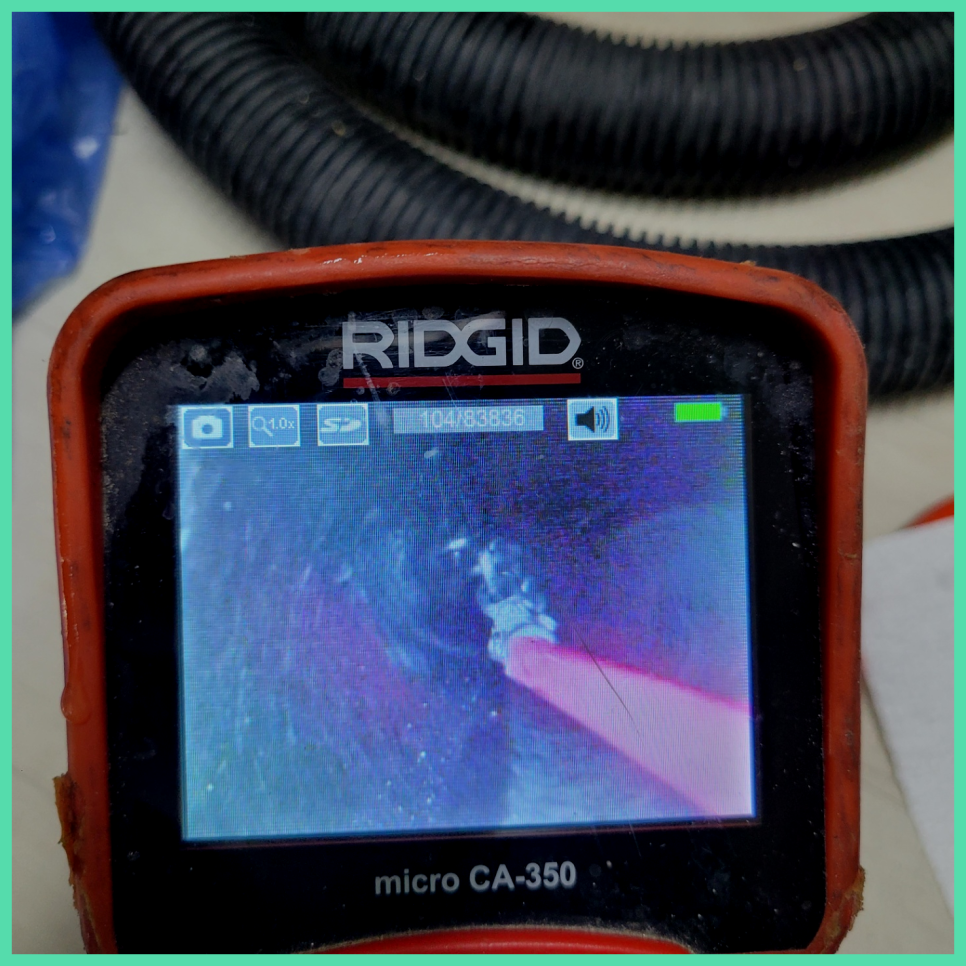
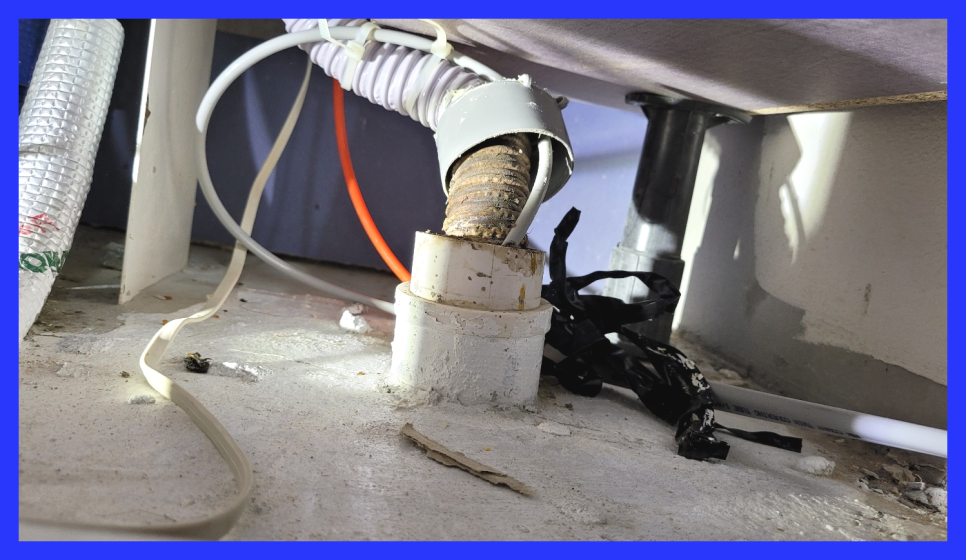
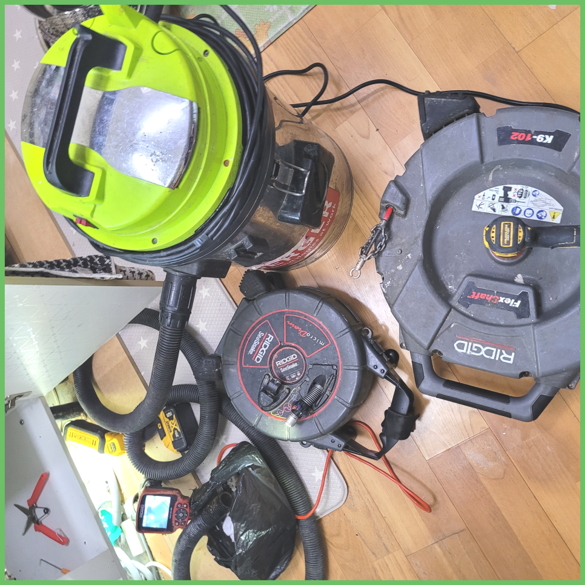
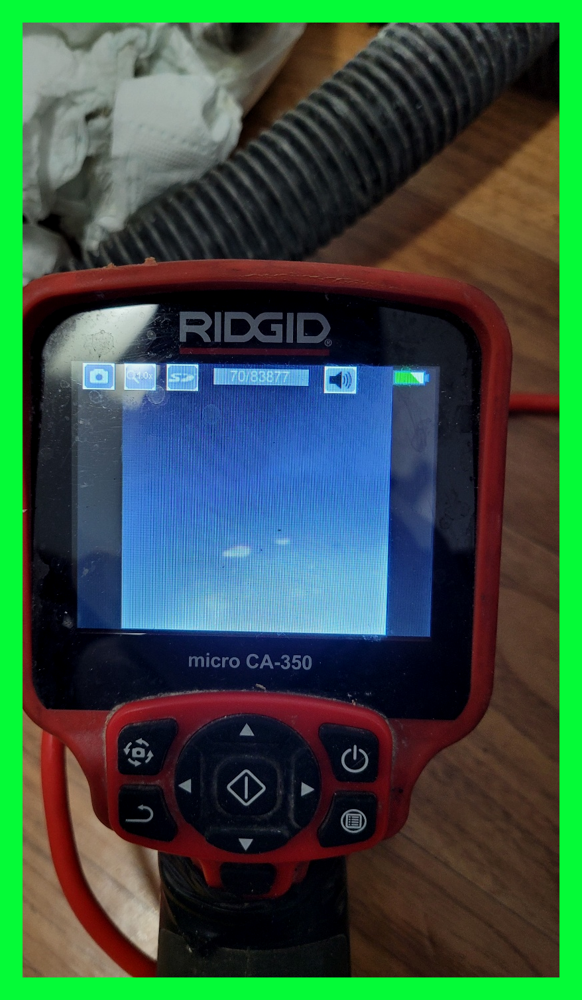
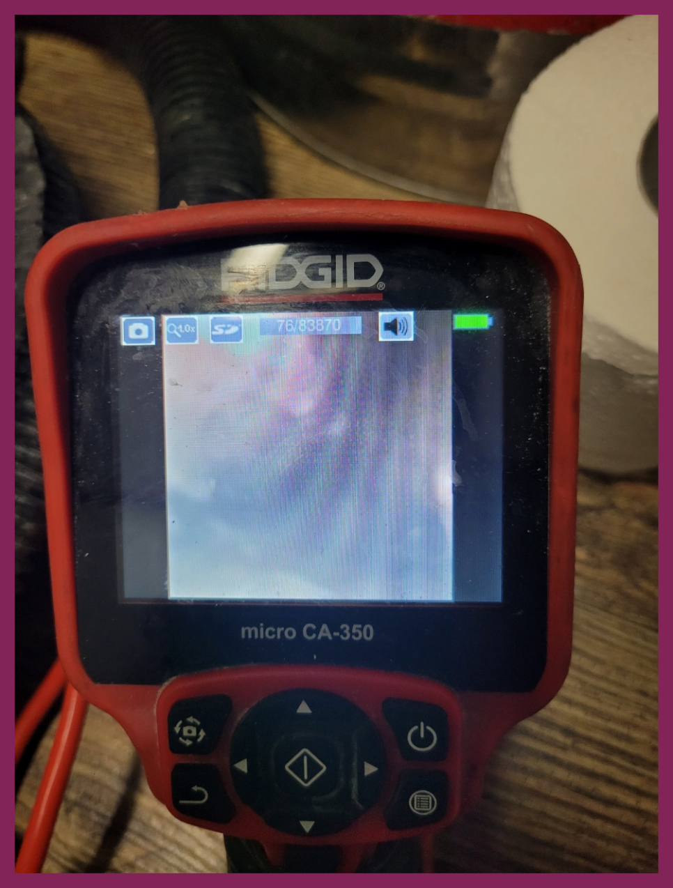
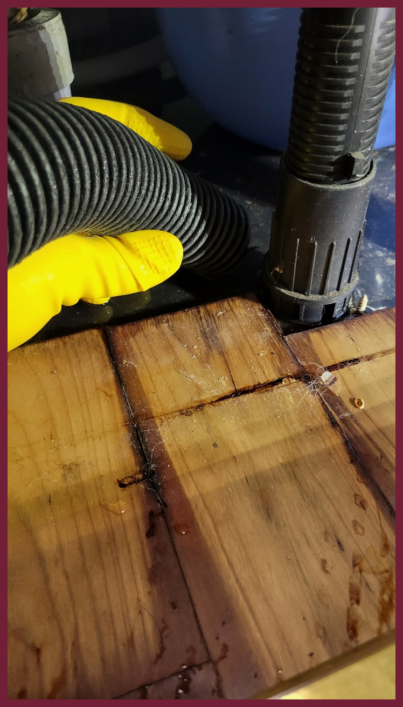

🏠 관악구 남현동 싱크대배수관막힘 보라매동 씽크역류 하수구설비
서울 관악구 싱크대막힘 전문 시공 후기

📋 작업 개요
- 위치: 서울 관악구, 관악구, 서울
- 서비스 유형: 싱크대막힘, 변기막힘, 하수구막힘, 배관막힘, 역류해결, 뚫는업체, 배관청소
- 작업 일시: 2024. 1. 4. 13:28
- 업체명: 하수구수사대 (010-5615-2118)
🔍 문제 상황
안녕하십니까^^
설비전문업체 "하수구수사대"를 찾아주셔서 감사드립니다.
저희 업체는 수많은 장비로 해결 방법을 통해 수많은 분들의 걱정을 해결해드리기 위해 노력하고 있습니다. 저희 쪽에서 구비하고 다니는 전문장비는 막힌 하수구를 완벽하게 뚫는데 최적화 되어있습니다.
관악구 남현동 싱크대배수관막힘 보라매동 씽크역류 하수구설비
상태가 더욱심각해지면 물이 새는 증상이 나오게 되는데요 안고치고 방치한다면 여러배관에 같은 증상이 나타나거나 각종 냄새들이 온 집안과 공간을 괴롭히게 됩니다.
🔎 원인 분석
💡 전문가 진단: 관악구 남현동 싱크대배수관막힘 보라매동 씽크역류 하수구설비
그래서 어떠한 물질이 퇴수를 막고 있는지를 내시경 카메라를 통해서 확인을 하는 것이 필요합니다. 막혀있는 물질이 무엇이냐에 따라서 작업의 방향이 결정이 되고 또한 어떠한 장비를 사용해야 할지를 판단할 수 있습니다.
물론 셀프로 처리하여 처리되는 경우가 상당히 많지만, 배출구배관 막힘 현상은 속도전이라고 표현할 수 있을 정도로 시간이 지체가 될수록 해결하기가 힘들어 될 수 있으면 전문가의 손길을 빌려 완벽하게 처리하는 걸 권장하고 있습니다. 고친 후 상황파악을 위해 배출구에 물을 틀어 놓아 얼마나 막혔는지를 제대로 보았는데요.
항상 배수관막힘 사항들을 옆에서 지켜보시는 고객님께서도 처음에는 걱정스러운 마음이 가득했다면 작업 진행 후 한결 마음이 편해지고 믿음이 가신다고 하더라고요! 10년넘은 경력자분들만 구성되어있기 때문에 안심하셔도 좋습니다. 배수관막힌 배관이나 깨진 배관도 확실하게 해결해드리며, 타업체와 달리 실패없는 전문전용장비 업체로 자리잡고 있어요.
무심하게 골랐다가 물이 흐르지 않아 전화 걸어보면 돈을 다시 내야 하는 경우들도 빈번하죠. 모르는 일 취급하는 건데 잘못 사용한 바가 없는데도 불구하고 며칠 안에 재발하게 되는 것은 퇴수구업체의 과실이랍니다.
배수배관에 물이 어느 정도 빠진 뒤 흡입기로 이물질을 빼내고 플렉스 샤프트를 이용하여 배수가 가능하도록 물길을 내어 드렸습니다. 고객님은 이를 보시곤 혹시라도 시공 비용이 더 나올까 봐 걱정하셨는데 이는 배수역류 사태를 막기 위해서 해드린 서비스라고 설명해 드리자 기뻐하셨습니다.

🔧 작업 과정
배출관 내시경 카메라 장비를 활용하면 맨눈으로 보기 힘든 좁은 배관 입구도 문제없이 확인할 수 있습니다. 호스가 얇아 어떤 배출관배관이라도 투입이 가능하고 카메라를 이용하여 손쉽게 배관 안 쪽의 상황을 확인할 수 있습니다. 이러한 사전 작업 없이 무작정 배관 청소 작업을 시작하면배출관 배관이 파손될 위험이 있습니다.
부분은막히게 되는이유를 모르시는데요.사례를들자면 갑작스럽게 물건들을 떨어트리고난후 막혀버리지만 이러한상황외에는 계속해서 한위치에만있었던 쓰레기들이 퇴수깊은곳에 쌓이게되다가 통수가안되서 그무엇도흐르지 않게된것이에요
저희와 같이 경험과 노하우가 많고 기계를 노련하게 활용할 수 있는 업체에 처음부터 일을 의뢰해 주시는 것이 오히려 비용을 줄이는 방법이라고 말씀드릴 수 있습니다. 퇴수비용 견적의 경우 유선상으로 정확하게 말씀드리는 게 제약이 되며 현장 상황을 파악 이후 정확한 견적을 말씀드릴 수 있다는 점, 양해 부탁드리겠습니다.
피같은돈을 들이는것인데 일을맡겼다가 실패하는건아닐지 걱정만 앞서실겁니다.오늘시간에는배출관막힘 이같은문제들을 해결해드리고자 저희만의 강점들을 소개드려보겠습니다.
배수 안에 누적된 침전물들은 자연스럽게 사라지는게아니고 계속쌓이다가 크기가부풀면서 엄청난일이 일어나게되는데요.
어떠한것보다 문제가발생하면 사용할수없어서 평소에생활이 불편해집니다.배출관역류를 안해야하지만 그렇게안된다면 상태가심각해집니다.
이사한 지 얼마 안 돼서 이런 배수막힘이 발생해 착잡한 심정이었던 인천 서구 씽크대뚫음 고객님을 위해 빨리 해결을 하고자 내시경 장비부터배수 배관 속에 넣어 안을 살펴보았습니다.
배출관가 막혔을 때 바른 조치 방법을 찾으신다면 인터넷에 나와있는 해결 방법이 아닌 경력 10년 이상의 전문가들을 불러주시는 것이 옳은 방법이겠습니다. 공용 배출관배관의 경우 작업을 마무리하고 물이 지나가는 것을 확인하기 위해 통수를 시키는데 이때 막힘이 없이 잘 빠져나가고 흐른다는 것을 확인해 주시면 작업 종료가 됩니다.


✅ 작업 완료
배출구내시경 화면을 주시하면서 스케일링 작업을 꼼꼼히 해준 결과 기름 범벅인 덩어리를 모두 떼어내는데 성공했습니다. 남은 구간을 훑어보며 벽면을 청소해 드렸으며 이 과정에서 떨어진 배출구 이물질은 석션기로 흡입해서 안전하게 밖으로 배출시켜 주었습니다.
이렇게 집안 곳곳, 그리고 음식점에서 하수관막힘 문제가 생겼을 경우에는 주저하지 마시고 편하게 연락 주시면 전국 어디라도 1시간 이내로 도착하니 궁금하신 점은 언제나 전화 주세요!
#하수구막힘 #하수구뚫음 #하수구역류 #씽크대막힘 #싱크대역류 #오수관막힘 #하수구청소 #욕실하수구막힘 #변기막힘 #하수구뚫는비용 #싱크대수리 #화장실막힘




⚠️ 주방 싱크대 배관 막힘 예방 수칙
- ✅ 기름기가 묻은 식기나 프라이팬은 설거지 전 키친타올로 반드시 기름때를 닦아내세요.
- ✅ 주기적으로 싱크대 개수대에 뜨거운 물을 가득 받아 한 번에 내려 배관 내부 기름을 씻어내세요.
- ✅ 배수구 거름망을 미세한 필터로 사용하시고 음식물 찌꺼기가 틈으로 새어 들지 않게 관리하세요.
- ✅ 베이킹소다와 식초를 뜨거운 물과 함께 일주일에 한 번씩 부어주면 배관 살균과 막힘 예방에 좋습니다.
💡 핵심 정리
- 확실한 장비 작업(내시경 점검 및 샤프트 스케일링)으로 원인을 뿌리 뽑습니다.
- 작업 후 1년 이내에 동일한 부위 재발 시 100% 무상 A/S 서비스를 보장합니다.
- 서울 · 경기 · 인천 전 지역에 24시간 언제든 긴급 출동할 수 있도록 항시 대기 중입니다.
❓ 자주 묻는 질문 (FAQ)
🚨 서울 관악구 싱크대막힘 문제로 고민이신가요?
정확한 원인 진단과 확실한 시공으로 재발 없는 해결을 약속드립니다.
24시간 긴급 출동 | 서울 · 경기 · 인천 전지역 | 1년 내 재발 시 무상 A/S